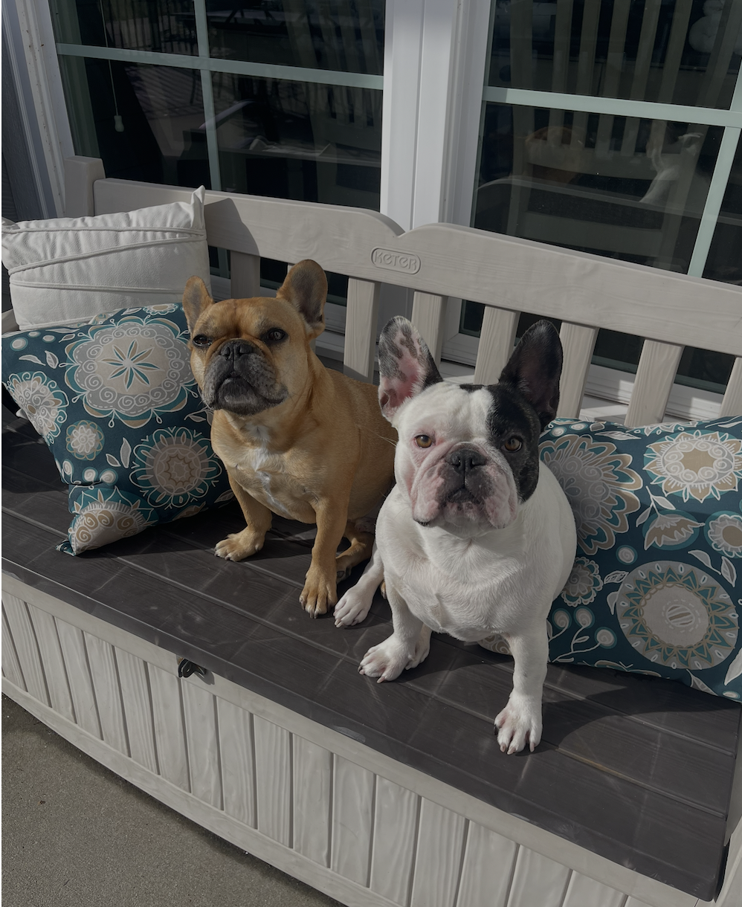
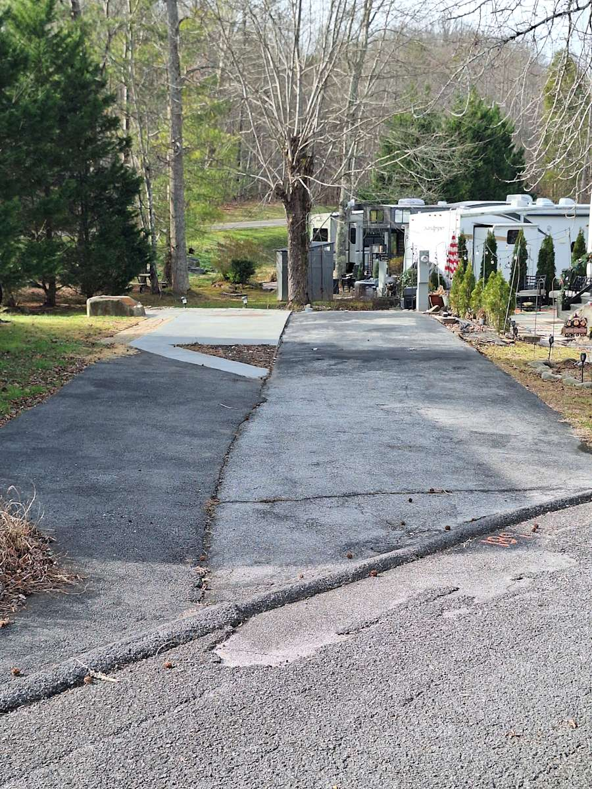

Ready-To-Stay
RV rental or park model
Choose this when you want the camper, RV, or furnished park model already on the lot. Compare sleep count, bathroom setup, kitchen details, outdoor seating, and host-provided supplies.
Stay Guide
A practical guide for choosing the right listing, checking host details, packing well, and arriving prepared for a privately owned RV resort stay on East Parkway.
Start Here
This page is meant to help you choose the right kind of stay before you leave this site for Airbnb, VRBO, Hipcamp, or an owner page. The listings are individually owned, so the details matter more than they would at a standard hotel.
Compare Current Listings
Pool Season
The resort pool is generally open from Memorial Day weekend through Labor Day weekend. If the pool matters to your trip, confirm the current season schedule with your host before booking.
Dogs at the Resort
Individual listings still set their own pet rules, so confirm pet approval with your host before booking. Once you arrive, visitors are required to pay a pet permit of $10 per pet for the trip duration.
Each lot is individually owned, so do not cut across other lots while walking dogs.

Pick the Right Listing Type
The most important difference on this site is simple: RV rentals and park models are places to stay. Lot rentals are spaces for guests bringing their own RV or camper. Tent camping is not offered at Outdoor Resorts Gatlinburg.
Ready-To-Stay
Choose this when you want the camper, RV, or furnished park model already on the lot. Compare sleep count, bathroom setup, kitchen details, outdoor seating, and host-provided supplies.

Bring Your RV
Choose this only if you are arriving with your own camper or RV. Check lot length, hookups, slide-out room, parking, and whether the lot is creekside or lake area.
Owner-Managed Stays
Outdoor Resorts Gatlinburg is not a single hotel desk with identical rooms. Each rentable RV, park model, or RV lot is owner-managed, and the booking platform is where the final rules live. This guide can help you compare, but your host's booking page and messages are the source of truth for that stay.
Property Map
When you are using the Browse Units section, the photo card of the listing will have a lot number. Match that lot number to the map to compare creekside, lake-area, hillside, and interior sections before you book.
Lot 103
What to Bring
A ready-to-stay RV may include linens, cookware, outdoor seating, or TVs. A lot rental means you are supplying the camper and most of the setup. The safest approach is to read the listing like a checklist, then message the host before assuming something is included.
Trip Planning
Outdoor Resorts Gatlinburg works best when you treat it as a base camp. Leave room in the schedule for traffic, mountain weather, and slower resort time instead of packing every day like a hotel stay in the middle of downtown.
Downtown Gatlinburg
Traffic and parking can shape the day. Pick the main thing you want to do downtown, then build meals and walking time around it.
Visit Gatlinburg.com →Greenbrier
East Parkway is helpful for guests who want Greenbrier, creek days, trail access, and a less crowded Smokies rhythm.
Greenbrier details →Resort Days
The best stays usually leave space for the pool, pond, putt-putt, laundry, grilling, or doing almost nothing after a long Gatlinburg day.
Browse Units →
During the Stay
Many guests are staying beside owners, repeat visitors, families, and other renters. Treat the lot, roadways, pools, laundry, and common spaces like a community, not a roadside campground. If a rule is unclear, check your host instructions or the resort office guidance.
Questions
No. Listings are individually owned and may be managed through Airbnb, VRBO, Hipcamp, or owner-direct pages.
No. Tent camping is not offered at Outdoor Resorts Gatlinburg.
Some listings have connected iCal feeds and more will be added as owners provide them. Always confirm on the booking platform before reserving.
Pet rules vary by listing. Do not assume a pet is allowed unless the booking page or host confirms it.
Ask about lot length, hookups, parking, slide-out room, access, and whether your camper size fits comfortably.
Ask about sleep count, bathroom type, linens, kitchen supplies, outdoor seating, stairs, parking, and check-in instructions.

Ready to Compare?
Browse RV rentals, park models, and lot rentals, then open the booking page to confirm the host details before you reserve.